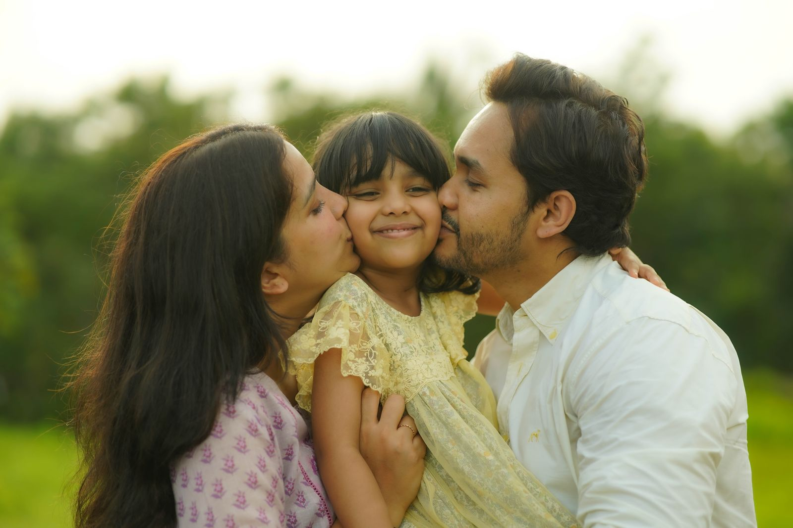
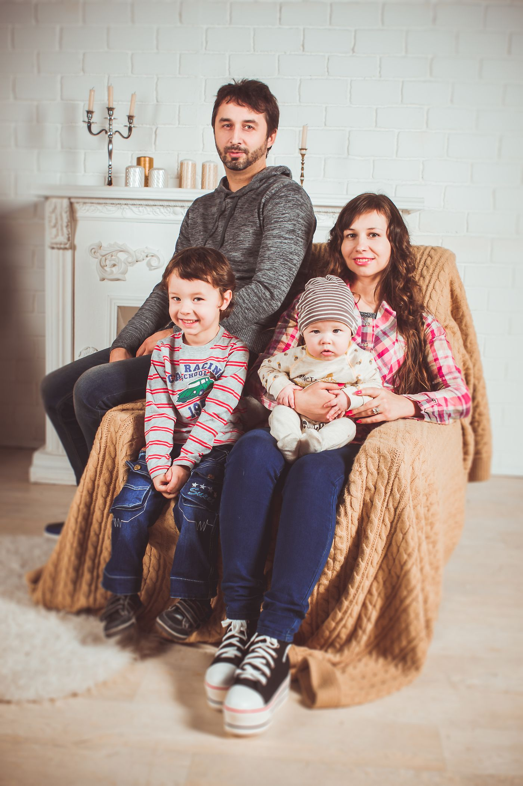
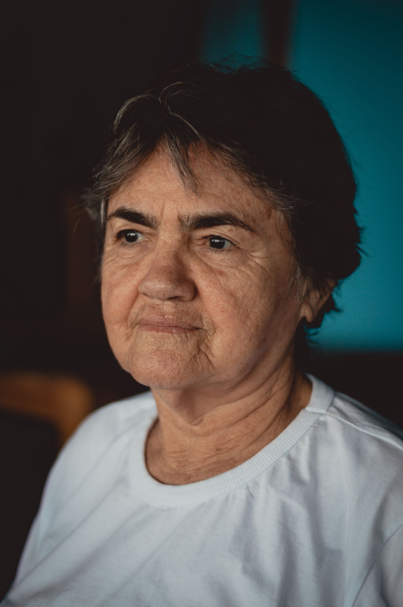

Stories through
the lens.

The space between us.
Hands find each other. Children turn toward a familiar voice. We leave room for those gestures, moving between a gathering of the whole family and the quieter moments in pairs.
Explore the portfolio

Before you arrive.
A solo portrait, a partner’s hand, a moment to breathe. Choose the pace and the company that feel right for you.
Discover packagesA little closer.
A little more yourselves.
A family portrait can hold a whole gathering, or the smallest exchange. These collected frames follow the gestures that make a photograph feel lived in.



Following the daylight.
Open shade, a bright wall, the edge of a window. Available light changes the mood of a portrait without asking much of the person in front of it.



Come as you are.
Bring clothes you can sit and move in comfortably. For group sessions, choose tones that work together. Tell us about any access needs, breaks or pairings you would like us to plan for.
Find your starting point.
A short portrait sitting, time together as a family, or a record of the weeks before a new arrival.